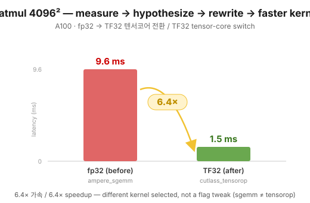
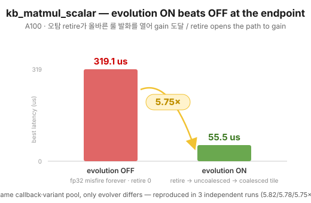
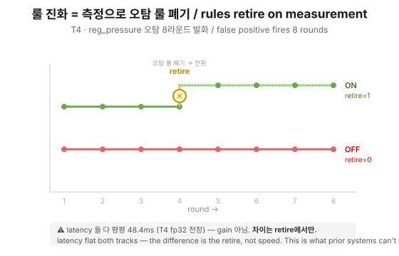

A GPU-kernel optimization loop whose classification rule table evolves from measurement feedback — a rule that keeps failing is retired by measurement, not by an LLM's judgment call.

One round = generate → gate → profile → match → ledger → evolve. The orange edges
feeding back into rules are the feedback edge static-rule prior art doesn't have.
Same variant pool, same problem (kb_matmul_scalar, real A100 run). Only the evolver differs.
| Round | Rule fired | Signal | Outcome |
|---|
uncoalesced fired next (load_eff 41.7% measured), tensor cores excluded (FFMA).
measure → hypothesize → rewrite → faster kernel (A100)

fp32 ampere_sgemm 9.6 ms → TF32 cutlass_tensorop 1.5 ms = 6.4×.
Kernel name changed (sgemm ≠ tensorop) — a genuinely different kernel was selected, not a flag flip.
Same contract on batched GEMM: 4.5× (2631 → 580 µs).
retire opens the path to gain — reproduced 3× (5.82× / 5.78× / 5.75×)

Evolution OFF stays trapped on a misfiring rule forever: 319.1 µs. Evolution ON: failures accumulate → retire → next eligible rule fires → 55.5 µs = 5.75×. Same callback, same variant pool — the only difference is the evolver.
evolution ON retires the false rule at round 4; OFF never retires (T4, 8 rounds)

Latency is flat on both tracks (T4 fp32 ceiling) — the difference is the retire itself, not speed. This is the step static-rule prior art structurally cannot do.